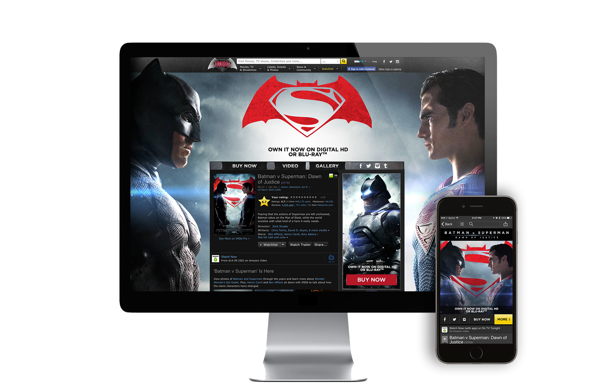
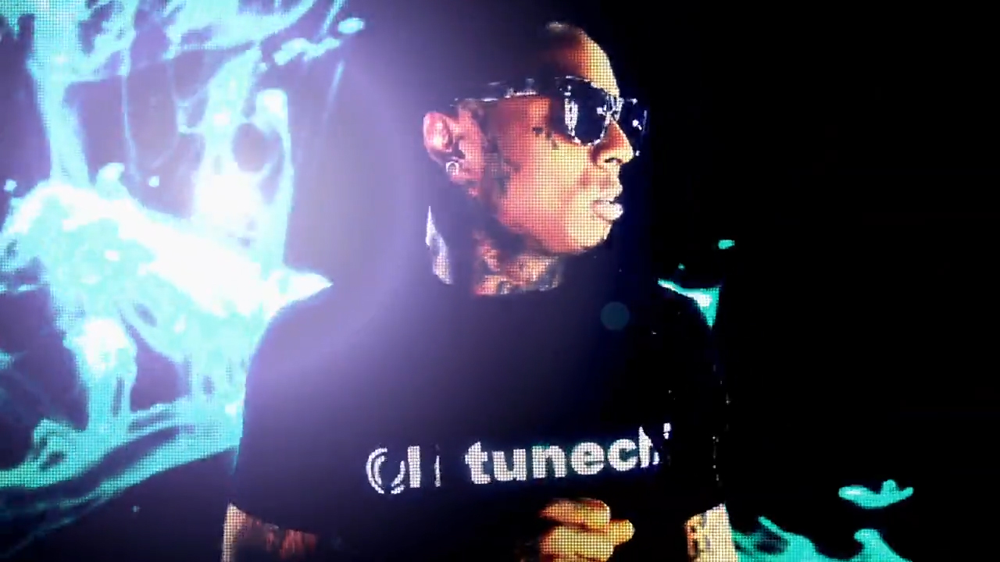
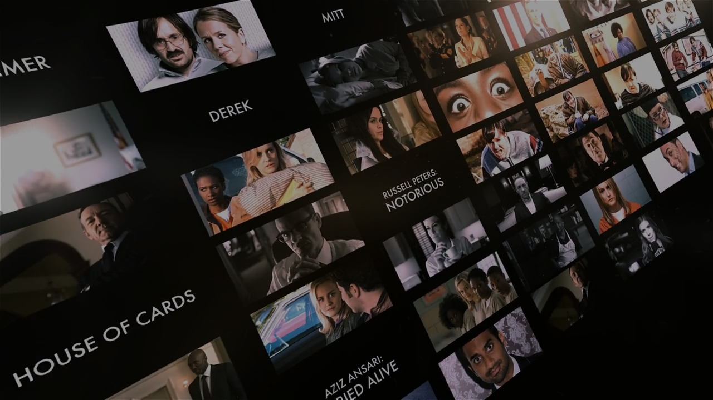
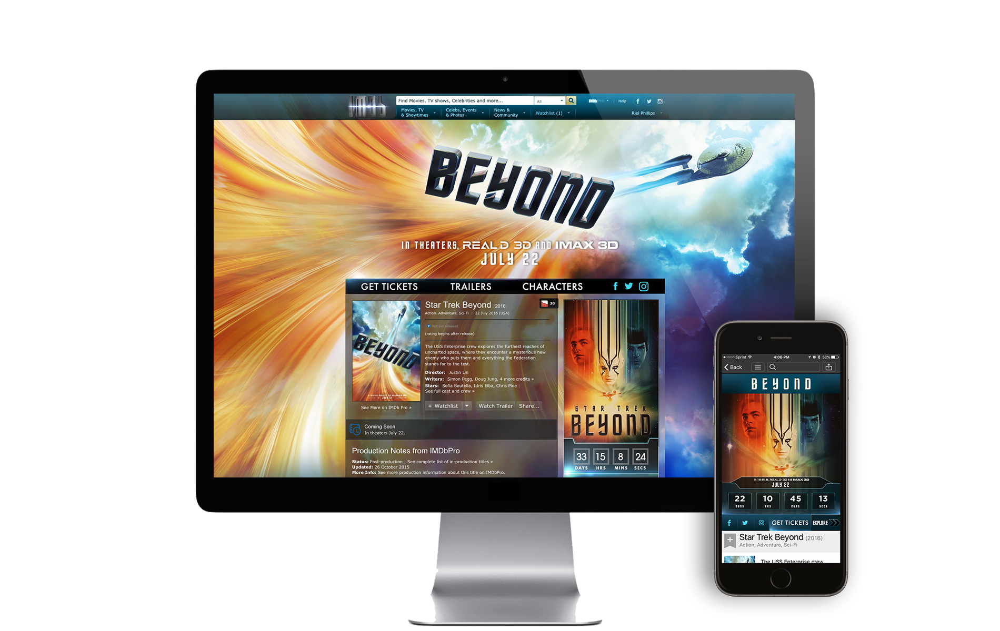

Short Bio
Riel Phillips is a Motion UX Designer based in Los Angeles California, with over eight years of experience in digital advertising. Riel has worked with some of the industry's largest brands, ideating and conception rich custom experiences that live on all device platforms. His proficiencies blanket a broad range of medians: from music videos and VFX to user experience design and web development. Riel is currently working full time at IMDb as a Senior UX Motion Designer.
Finding my place
I was born in Trinidad and Tobago, a small island in the Caribbean. When I was six years old, my mom got a nursing job in New York, so we moved there for a few years. While there, our family continued to grow (I'm the oldest of 7) so we decided to move to Houston TX. To pass the time during the blazing hot summers, I used to shoot short films on with my family as actors, cutting the scenes in our VHS camera. I had fallen in love with directing and video editing and envisioned myself doing it for a living someday. But like most of us who have a seemingly unattainable dream, I was told there was no money in it; it was too hard to get into, too competitive, etc. I decided to play it safe and study medicine at Baylor University. After going for about two semesters, I realized my heart wasn't in it, so I took the plunge and moved to Los Angeles to study commercial and video production at Brooks Institute. It's still to this day one of the best decisions I've ever made.
How did you first get interested in design?
How I discovered design is a little unconventional. While at Brooks Institute, a small art school, I became fascinated with taking my video editing/post production skills even further. Film school was super competitive, so I needed a way to stand out. I noticed there wasn't a lot of designers working with film students, even though there was a significant need for them on multiple projects. I decided to take electives to learn After Effects, Photoshop and Illustrator. I worked on a ton of student projects doing end titles, special effects, green screen removal, basically anything post related. I also worked in the computer labs on campus. I wanted to learn as many programs as possible related to my field, and this was the best way to do so. Before graduation, I landed a dream internship at Blind in Santa Monica, and that's where I got a professional crash course in graphic and motion design.
Tell me about the work you've done?
I started working professionally in 2009, and some of my early work consisted of music videos and commercials. I've collaborated with artists such as Lil Wayne, Jason Derulo, Marques Houston and Yelawolf. I've also worked on campaigns for Disney, ESPN, Netflix, Hautelook, Amazon Studios, and Nickelodeon. In my free time, I've worked with my church and other non-profits to create designs and animations that help bring awareness to their cause. I also run a small blog called AE Tips and Tricks, where I post the best After Effects tutorials from little-known artists around the world.
What are you working on right now, either for work or yourself?
Currently, I'm working as a Motion UX Designer at IMDb, where I design and animate custom experiences and products throughout the site, considering all platforms. In a nutshell, we work with movie studios to create "mini-sites" that live on IMDb. You may have seen some of my work for Batman Vs Superman, Kubo and the Two Strings, Star Trek Beyond, World Of Warcraft, and The Angry Birds Movie.
What are your proudest accomplishments of your career?
I would have to say getting hired at IMDb. Because of my love for film and my career as a designer, this position has been a match made in heaven.
What are you doing that's special that sets you apart from your peers?
The first thing that comes to mind is curiosity. I'm always willing to step outside my comfort zone and learn something new. Because of this, I've been able to work on a broad range of medians and projects, some heavy in VFX and post production, some heavy in design and web development. Whatever the median, so long as it's creative, I'm willing to learn. I've had a passion for the arts ever since Houston, and I remind myself of where I came from every day.
What have your experiences been as a person of color in the design industry?
For the most part very positive. I'm a very outgoing and positive person, and I feel my personality trumps any preconceived notions people may have. Over the years, I've learned to let my work speak for itself. I do however feel that there aren't enough people of color in the design field, and I believe this is due in large part to the lack of exposure to the field and its possibilities.
What are your biggest motivators?
As a recent father, I would have to say my number one motivator is my son. He lights up my world!
Second, in my early years as a designer, I freelanced at competitive agencies in short stints. These small jobs were all I had to support myself here in LA, and a lot of times I wouldn't be briefed before being brought in. This instilled a fear of being underprepared for the job. Even though I'm now full-time, I still have that fear, and it motivates me to over prepare for each project.
What would you like to see changed about the design field?
This is a tough question because I feel like the design field is in it's prime at the moment. We are living in an age where information is flying at us at the speed of light, with more and more data getting served to us on the daily. It's up to us designer to translate that data into concise, aesthetically pleasing interfaces that people enjoy. Talk about job security!
How can design be more accommodating to underrepresented populations of people?
I would love to see more mentor-type programs for people of color who are interested in the design industry. There are so many different types of designers; each could lead to a different career path. If I were a new student coming into design, it would be great to have a mentor who works in the industry. Just hearing someone else's story may inspire a new one.
What advice would you give to folks from a similar background who are in design or hoping to get into it?
Stay curious, build your portfolio, and build your personal brand. If you're in school, use that time wisely. Utilize all of the tools at your disposal, and make sure you leave with work that you're proud of. Whatever you do, don't pigeonhole yourself to just one thing. Stay curious, keep learning, and most of all, enjoy every moment of it.